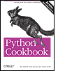

•
Table of Contents
•
Index
•
Reviews
•
Reader Reviews
•
Errata
•
Academic
Python Cookbook, 2nd Edition
By
David Ascher
,
Alex Martelli
,
Anna Ravenscroft
Publisher
: O'Reilly
Pub Date
: March 2005
ISBN
: 0-596-00797-3
Pages
: 844
Copyright
Preface
The Design of the Book
The Implementation of the Book
Using the Code from This Book
Audience
Organization
Further Reading
Conventions Used in This Book
How to Contact Us
Safari® Enabled
Acknowledgments
Chapter 1. Text
Introduction
Recipe 1.1. Processing a String One Character at a Time
Recipe 1.2. Converting Between Characters and Numeric Codes
Recipe 1.3. Testing Whether an Object Is String-like
Recipe 1.4. Aligning Strings
Recipe 1.5. Trimming Space from the Ends of a String
Recipe 1.6. Combining Strings
Recipe 1.7. Reversing a String by Words or Characters
Recipe 1.8. Checking Whether a String Contains a Set of Characters
Recipe 1.9. Simplifying Usage of Strings' translate Method
Recipe 1.10. Filtering a String for a Set of Characters
Recipe 1.11. Checking Whether a String Is Text or Binary
Recipe 1.12. Controlling Case
Recipe 1.13. Accessing Substrings
Recipe 1.14. Changing the Indentation of a Multiline String
Recipe 1.15. Expanding and Compressing Tabs
Recipe 1.16. Interpolating Variables in a String
Recipe 1.17. Interpolating Variables in a Stringin Python 2.4
Recipe 1.18. Replacing Multiple Patterns in a Single Pass
Recipe 1.19. Checking a String for Any of Multiple Endings
Recipe 1.20. Handling International Text with Unicode
Recipe 1.21. Converting Between Unicode and Plain Strings
Recipe 1.22. Printing Unicode Charactersto Standard Output
Recipe 1.23. Encoding Unicode Data for XML and HTML
Recipe 1.24. Making Some Strings Case-Insensitive
Recipe 1.25. Converting HTML Documents to Texton a Unix Terminal
Chapter 2. Files
Introduction
Recipe 2.1. Reading from a File
Recipe 2.2. Writing to a File
Recipe 2.3. Searching and Replacing Text in a File
Recipe 2.4. Reading a Specific Line from a File
Recipe 2.5. Counting Lines in a File
Recipe 2.6. Processing Every Word in a File
Recipe 2.7. Using Random-Access Input/Output
Recipe 2.8. Updating a Random-Access File
Recipe 2.9. Reading Data from zip Files
Recipe 2.10. Handling a zip File Inside a String
Recipe 2.11. Archiving a Tree of Files into a Compressed tar File
Recipe 2.12. Sending Binary Data to Standard Output Under Windows
Recipe 2.13. Using a C++-like iostream Syntax
Recipe 2.14. Rewinding an Input File to the Beginning
Recipe 2.15. Adapting a File-like Object to a True File Object
Recipe 2.16. Walking Directory Trees
Recipe 2.17. Swapping One File Extension for Another Throughout a Directory Tree
Recipe 2.18. Finding a File Given a Search Path
Recipe 2.19. Finding Files Given a Search Path and a Pattern
Recipe 2.20. Finding a File on the Python Search Path
Recipe 2.21. Dynamically Changing the PythonSearch Path
Recipe 2.22. Computing the Relative Path from One Directory to Another
Recipe 2.23. Reading an Unbuffered Character in a Cross-Platform Way
Recipe 2.24. Counting Pages of PDF Documents on Mac OS X
Recipe 2.25. Changing File Attributes on Windows
Recipe 2.26. Extracting Text from OpenOffice.org Documents
Recipe 2.27. Extracting Text from Microsoft Word Documents
Recipe 2.28. File Locking Using a Cross-Platform API
Recipe 2.29. Versioning Filenames
Recipe 2.30. Calculating CRC-64 Cyclic Redundancy Checks
Chapter 3. Time and Money
Introduction
Recipe 3.1. Calculating Yesterday and Tomorrow
Recipe 3.2. Finding Last Friday
Recipe 3.3. Calculating Time Periods in a Date Range
Recipe 3.4. Summing Durations of Songs
Recipe 3.5. Calculating the Number of Weekdays Between Two Dates
Recipe 3.6. Looking up Holidays Automatically
Recipe 3.7. Fuzzy Parsing of Dates
Recipe 3.8. Checking Whether Daylight Saving Time Is Currently in Effect
Recipe 3.9. Converting Time Zones
Recipe 3.10. Running a Command Repeatedly
Recipe 3.11. Scheduling Commands
Recipe 3.12. Doing Decimal Arithmetic
Recipe 3.13. Formatting Decimals as Currency
Recipe 3.14. Using Python as a Simple Adding Machine
Recipe 3.15. Checking a Credit Card Checksum
Recipe 3.16. Watching Foreign Exchange Rates
Chapter 4. Python Shortcuts
Introduction
Recipe 4.1. Copying an Object
Recipe 4.2. Constructing Lists with List Comprehensions
Recipe 4.3. Returning an Element of a List If It Exists
Recipe 4.4. Looping over Items and Their Indices in a Sequence
Recipe 4.5. Creating Lists of Lists Without Sharing References
Recipe 4.6. Flattening a Nested Sequence
Recipe 4.7. Removing or Reordering Columnsin a List of Rows
Recipe 4.8. Transposing Two-Dimensional Arrays
Recipe 4.9. Getting a Value from a Dictionary
Recipe 4.10. Adding an Entry to a Dictionary
Recipe 4.11. Building a Dictionary Without Excessive Quoting
Recipe 4.12. Building a Dict from a List of Alternating Keys and Values
Recipe 4.13. Extracting a Subset of a Dictionary
Recipe 4.14. Inverting a Dictionary
Recipe 4.15. Associating Multiple Values with Each Key in a Dictionary
Recipe 4.16. Using a Dictionary to Dispatch Methods or Functions
Recipe 4.17. Finding Unions and Intersections of Dictionaries
Recipe 4.18. Collecting a Bunch of Named Items
Recipe 4.19. Assigning and Testing with One Statement
Recipe 4.20. Using printf in Python
Recipe 4.21. Randomly Picking Items with Given Probabilities
Recipe 4.22. Handling Exceptions Within an Expression
Recipe 4.23. Ensuring a Name Is Defined in a Given Module
Chapter 5. Searching and Sorting
Introduction
Recipe 5.1. Sorting a Dictionary
Recipe 5.2. Sorting a List of Strings Case-Insensitively
Recipe 5.3. Sorting a List of Objects by an Attribute of the Objects
Recipe 5.4. Sorting Keys or Indices Basedon the Corresponding Values
Recipe 5.5. Sorting Strings with Embedded Numbers
Recipe 5.6. Processing All of a List's Items in Random Order
Recipe 5.7. Keeping a Sequence Ordered as Items Are Added
Recipe 5.8. Getting the First Few Smallest Items of a Sequence
Recipe 5.9. Looking for Items in a Sorted Sequence
Recipe 5.10. Selecting the nth Smallest Element of a Sequence
Recipe 5.11. Showing off quicksort in Three Lines
Recipe 5.12. Performing Frequent Membership Tests on a Sequence
Recipe 5.13. Finding Subsequences
Recipe 5.14. Enriching the Dictionary Type with Ratings Functionality
Recipe 5.15. Sorting Names and Separating Them by Initials
Chapter 6. Object-Oriented Programming
Introduction
Recipe 6.1. Converting Among Temperature Scales
Recipe 6.2. Defining Constants
Recipe 6.3. Restricting Attribute Setting
Recipe 6.4. Chaining Dictionary Lookups
Recipe 6.5. Delegating Automatically as an Alternative to Inheritance
Recipe 6.6. Delegating Special Methods in Proxies
Recipe 6.7. Implementing Tuples with Named Items
Recipe 6.8. Avoiding Boilerplate Accessors for Properties
Recipe 6.9. Making a Fast Copy of an Object
Recipe 6.10. Keeping References to Bound Methods Without Inhibiting Garbage Collection
Recipe 6.11. Implementing a Ring Buffer
Recipe 6.12. Checking an Instance for Any State Changes
Recipe 6.13. Checking Whether an Object Has Necessary Attributes
Recipe 6.14. Implementing the State Design Pattern
Recipe 6.15. Implementing the "Singleton" Design Pattern
Recipe 6.16. Avoiding the "Singleton" Design Pattern with the Borg Idiom
Recipe 6.17. Implementing the Null Object Design Pattern
Recipe 6.18. Automatically Initializing Instance Variables from _ _init_ _ Arguments
Recipe 6.19. Calling a Superclass _ _init_ _ Method If It Exists
Recipe 6.20. Using Cooperative Supercalls Concisely and Safely
Chapter 7. Persistence and Databases
Introduction
Recipe 7.1. Serializing Data Using the marshal Module
Recipe 7.2. Serializing Data Using the pickle and cPickle Modules
Recipe 7.3. Using Compression with Pickling
Recipe 7.4. Using the cPickle Module on Classes and Instances
Recipe 7.5. Holding Bound Methods in a Picklable Way
Recipe 7.6. Pickling Code Objects
Recipe 7.7. Mutating Objects with shelve
Recipe 7.8. Using the Berkeley DB Database
Recipe 7.9. Accesssing a MySQL Database
Recipe 7.10. Storing a BLOB in a MySQL Database
Recipe 7.11. Storing a BLOB in a PostgreSQL Database
Recipe 7.12. Storing a BLOB in a SQLite Database
Recipe 7.13. Generating a Dictionary Mapping Field Names to Column Numbers
Recipe 7.14. Using dtuple for Flexible Accessto Query Results
Recipe 7.15. Pretty-Printing the Contents of Database Cursors
Recipe 7.16. Using a Single Parameter-Passing Style Across Various DB API Modules
Recipe 7.17. Using Microsoft Jet via ADO
Recipe 7.18. Accessing a JDBC Database from a Jython Servlet
Recipe 7.19. Using ODBC to Get Excel Data with Jython
Chapter 8. Debugging and Testing
Introduction
Recipe 8.1. Disabling Execution of Some Conditionals and Loops
Recipe 8.2. Measuring Memory Usage on Linux
Recipe 8.3. Debugging the Garbage-Collection Process
Recipe 8.4. Trapping and Recording Exceptions
Recipe 8.5. Tracing Expressions and Comments in Debug Mode
Recipe 8.6. Getting More Information from Tracebacks
Recipe 8.7. Starting the Debugger Automatically After an Uncaught Exception
Recipe 8.8. Running Unit Tests Most Simply
Recipe 8.9. Running Unit Tests Automatically
Recipe 8.10. Using doctest with unittest in Python 2.4
Recipe 8.11. Checking Values Against Intervals in Unit Testing
Chapter 9. Processes, Threads, and Synchronization
Introduction
Recipe 9.1. Synchronizing All Methods in an Object
Recipe 9.2. Terminating a Thread
Recipe 9.3. Using a Queue.Queue as a Priority Queue
Recipe 9.4. Working with a Thread Pool
Recipe 9.5. Executing a Function in Parallel on Multiple Argument Sets
Recipe 9.6. Coordinating Threads by Simple Message Passing
Recipe 9.7. Storing Per-Thread Information
Recipe 9.8. Multitasking Cooperatively Without Threads
Recipe 9.9. Determining Whether Another Instanceof a Script Is Already Running in Windows
Recipe 9.10. Processing Windows Messages Using MsgWaitForMultipleObjects
Recipe 9.11. Driving an External Process with popen
Recipe 9.12. Capturing the Output and Error Streams from a Unix Shell Command
Recipe 9.13. Forking a Daemon Process on Unix
Chapter 10. System Administration
Introduction
Recipe 10.1. Generating Random Passwords
Recipe 10.2. Generating Easily Remembered Somewhat-Random Passwords
Recipe 10.3. Authenticating Users by Means of a POP Server
Recipe 10.4. Calculating Apache Hits per IP Address
Recipe 10.5. Calculating the Rate of Client Cache Hits on Apache
Recipe 10.6. Spawning an Editor from a Script
Recipe 10.7. Backing Up Files
Recipe 10.8. Selectively Copying a Mailbox File
Recipe 10.9. Building a Whitelist of Email Addresses From a Mailbox
Recipe 10.10. Blocking Duplicate Mails
Recipe 10.11. Checking Your Windows Sound System
Recipe 10.12. Registering or Unregistering a DLL on Windows
Recipe 10.13. Checking and Modifying the Set of Tasks Windows Automatically Runs at Login
Recipe 10.14. Creating a Share on Windows
Recipe 10.15. Connecting to an Already Running Instance of Internet Explorer
Recipe 10.16. Reading Microsoft Outlook Contacts
Recipe 10.17. Gathering Detailed System Informationon Mac OS X
Chapter 11. User Interfaces
Introduction
Recipe 11.1. Showing a Progress Indicator on a Text Console
Recipe 11.2. Avoiding lambda in Writing Callback Functions
Recipe 11.3. Using Default Values and Bounds with tkSimpleDialog Functions
Recipe 11.4. Adding Drag and Drop Reordering to a Tkinter Listbox
Recipe 11.5. Entering Accented Characters in Tkinter Widgets
Recipe 11.6. Embedding Inline GIFs Using Tkinter
Recipe 11.7. Converting Among Image Formats
Recipe 11.8. Implementing a Stopwatch in Tkinter
Recipe 11.9. Combining GUIs and Asynchronous I/Owith Threads
Recipe 11.10. Using IDLE's Tree Widget in Tkinter
Recipe 11.11. Supporting Multiple Values per Row in a Tkinter Listbox
Recipe 11.12. Copying Geometry Methods and Options Between Tkinter Widgets
Recipe 11.13. Implementing a Tabbed Notebook for Tkinter
Recipe 11.14. Using a wxPython Notebook with Panels
Recipe 11.15. Implementing an ImageJ Plug-in in Jython
Recipe 11.16. Viewing an Image from a URL with Swing and Jython
Recipe 11.17. Getting User Input on Mac OS
Recipe 11.18. Building a Python Cocoa GUI Programmatically
Recipe 11.19. Implementing Fade-in Windows with IronPython
Chapter 12. Processing XML
Introduction
Recipe 12.1. Checking XML Well-Formedness
Recipe 12.2. Counting Tags in a Document
Recipe 12.3. Extracting Text from an XML Document
Recipe 12.4. Autodetecting XML Encoding
Recipe 12.5. Converting an XML Document into a Tree of Python Objects
Recipe 12.6. Removing Whitespace-only Text Nodes from an XML DOM Node's Subtree
Recipe 12.7. Parsing Microsoft Excel's XML
Recipe 12.8. Validating XML Documents
Recipe 12.9. Filtering Elements and Attributes Belonging to a Given Namespace
Recipe 12.10. Merging Continuous Text Events with a SAX Filter
Recipe 12.11. Using MSHTML to Parse XML or HTML
Chapter 13. Network Programming
Introduction
Recipe 13.1. Passing Messages with Socket Datagrams
Recipe 13.2. Grabbing a Document from the Web
Recipe 13.3. Filtering a List of FTP Sites
Recipe 13.4. Getting Time from a Server via the SNTP Protocol
Recipe 13.5. Sending HTML Mail
Recipe 13.6. Bundling Files in a MIME Message
Recipe 13.7. Unpacking a Multipart MIME Message
Recipe 13.8. Removing Attachments from an Email Message
Recipe 13.9. Fixing Messages Parsed by Python 2.4 email.FeedParser
Recipe 13.10. Inspecting a POP3 Mailbox Interactively
Recipe 13.11. Detecting Inactive Computers
Recipe 13.12. Monitoring a Network with HTTP
Recipe 13.13. Forwarding and Redirecting Network Ports
Recipe 13.14. Tunneling SSL Through a Proxy
Recipe 13.15. Implementing the Dynamic IP Protocol
Recipe 13.16. Connecting to IRC and Logging Messages to Disk
Recipe 13.17. Accessing LDAP Servers
Chapter 14. Web Programming
Introduction
Recipe 14.1. Testing Whether CGI Is Working
Recipe 14.2. Handling URLs Within a CGI Script
Recipe 14.3. Uploading Files with CGI
Recipe 14.4. Checking for a Web Page's Existence
Recipe 14.5. Checking Content Type via HTTP
Recipe 14.6. Resuming the HTTP Download of a File
Recipe 14.7. Handling Cookies While Fetching Web Pages
Recipe 14.8. Authenticating with a Proxy for HTTPS Navigation
Recipe 14.9. Running a Servlet with Jython
Recipe 14.10. Finding an Internet Explorer Cookie
Recipe 14.11. Generating OPML Files
Recipe 14.12. Aggregating RSS Feeds
Recipe 14.13. Turning Data into Web Pages Through Templates
Recipe 14.14. Rendering Arbitrary Objects with Nevow
Chapter 15. Distributed Programming
Introduction
Recipe 15.1. Making an XML-RPC Method Call
Recipe 15.2. Serving XML-RPC Requests
Recipe 15.3. Using XML-RPC with Medusa
Recipe 15.4. Enabling an XML-RPC Server to Be Terminated Remotely
Recipe 15.5. Implementing SimpleXMLRPCServer Niceties
Recipe 15.6. Giving an XML-RPC Server a wxPython GUI
Recipe 15.7. Using Twisted Perspective Broker
Recipe 15.8. Implementing a CORBA Server and Client
Recipe 15.9. Performing Remote Logins Using telnetlib
Recipe 15.10. Performing Remote Logins with SSH
Recipe 15.11. Authenticating an SSL Client over HTTPS
Chapter 16. Programs About Programs
Introduction
Recipe 16.1. Verifying Whether a String Represents a Valid Number
Recipe 16.2. Importing a Dynamically Generated Module
Recipe 16.3. Importing from a Module Whose Name Is Determined at Runtime
Recipe 16.4. Associating Parameters with a Function (Currying)
Recipe 16.5. Composing Functions
Recipe 16.6. Colorizing Python Source Using the Built-in Tokenizer
Recipe 16.7. Merging and Splitting Tokens
Recipe 16.8. Checking Whether a String Has Balanced Parentheses
Recipe 16.9. Simulating Enumerations in Python
Recipe 16.10. Referring to a List Comprehension While Building It
Recipe 16.11. Automating the py2exe Compilation of Scripts into Windows Executables
Recipe 16.12. Binding Main Script and Modules into One Executable on Unix
Chapter 17. Extending and Embedding
Introduction
Recipe 17.1. Implementing a Simple Extension Type
Recipe 17.2. Implementing a Simple Extension Type with Pyrex
Recipe 17.3. Exposing a C++ Library to Python
Recipe 17.4. Calling Functions from a Windows DLL
Recipe 17.5. Using SWIG-Generated Modules in a Multithreaded Environment
Recipe 17.6. Translating a Python Sequence into a C Array with the PySequence_Fast Protocol
Recipe 17.7. Accessing a Python Sequence Item-by-Item with the Iterator Protocol
Recipe 17.8. Returning None from a Python-Callable C Function
Recipe 17.9. Debugging Dynamically Loaded C Extensions with gdb
Recipe 17.10. Debugging Memory Problems
Chapter 18. Algorithms
Introduction
Recipe 18.1. Removing Duplicates from a Sequence
Recipe 18.2. Removing Duplicates from a Sequence While Maintaining Sequence Order
Recipe 18.3. Generating Random Samples with Replacement
Recipe 18.4. Generating Random Samples Without Replacement
Recipe 18.5. Memoizing (Caching) the Return Values of Functions
Recipe 18.6. Implementing a FIFO Container
Recipe 18.7. Caching Objects with a FIFO Pruning Strategy
Recipe 18.8. Implementing a Bag (Multiset) Collection Type
Recipe 18.9. Simulating the Ternary Operator in Python
Recipe 18.10. Computing Prime Numbers
Recipe 18.11. Formatting Integers as Binary Strings
Recipe 18.12. Formatting Integers as Strings in Arbitrary Bases
Recipe 18.13. Converting Numbers to Rationals via Farey Fractions
Recipe 18.14. Doing Arithmetic with Error Propagation
Recipe 18.15. Summing Numbers with Maximal Accuracy
Recipe 18.16. Simulating Floating Point
Recipe 18.17. Computing the Convex Hulls and Diameters of 2D Point Sets
Chapter 19. Iterators and Generators
Introduction
Recipe 19.1. Writing a range-like Function with Float Increments
Recipe 19.2. Building a List from Any Iterable
Recipe 19.3. Generating the Fibonacci Sequence
Recipe 19.4. Unpacking a Few Items in a Multiple Assignment
Recipe 19.5. Automatically Unpacking the Needed Number of Items
Recipe 19.6. Dividing an Iterable into n Slices of Stride n
Recipe 19.7. Looping on a Sequence by Overlapping Windows
Recipe 19.8. Looping Through Multiple Iterables in Parallel
Recipe 19.9. Looping Through the Cross-Product of Multiple Iterables
Recipe 19.10. Reading a Text File by Paragraphs
Recipe 19.11. Reading Lines with Continuation Characters
Recipe 19.12. Iterating on a Stream of Data Blocks as a Stream of Lines
Recipe 19.13. Fetching Large Record Sets from a Database with a Generator
Recipe 19.14. Merging Sorted Sequences
Recipe 19.15. Generating Permutations, Combinations, and Selections
Recipe 19.16. Generating the Partitions of an Integer
Recipe 19.17. Duplicating an Iterator
Recipe 19.18. Looking Ahead into an Iterator
Recipe 19.19. Simplifying Queue-Consumer Threads
Recipe 19.20. Running an Iterator in Another Thread
Recipe 19.21. Computing a Summary Report with itertools.groupby
Chapter 20. Descriptors, Decorators,and Metaclasses
Introduction
Recipe 20.1. Getting Fresh Default Values at Each Function Call
Recipe 20.2. Coding Properties as Nested Functions
Recipe 20.3. Aliasing Attribute Values
Recipe 20.4. Caching Attribute Values
Recipe 20.5. Using One Method as Accessorfor Multiple Attributes
Recipe 20.6. Adding Functionality to a Class by Wrapping a Method
Recipe 20.7. Adding Functionality to a Class by Enriching All Methods
Recipe 20.8. Adding a Method to a Class Instance at Runtime
Recipe 20.9. Checking Whether Interfaces Are Implemented
Recipe 20.10. Using _ _new_ _ and _ _init_ _ Appropriately in Custom Metaclasses
Recipe 20.11. Allowing Chaining of Mutating List Methods
Recipe 20.12. Using Cooperative Super calls with Terser Syntax
Recipe 20.13. Initializing Instance Attributes Without Using _ _init_ _
Recipe 20.14. Automatic Initialization of Instance Attributes
Recipe 20.15. Upgrading Class Instances Automatically on reload
Recipe 20.16. Binding Constants at Compile Time
Recipe 20.17. Solving Metaclass Conflicts
Colophon
Index